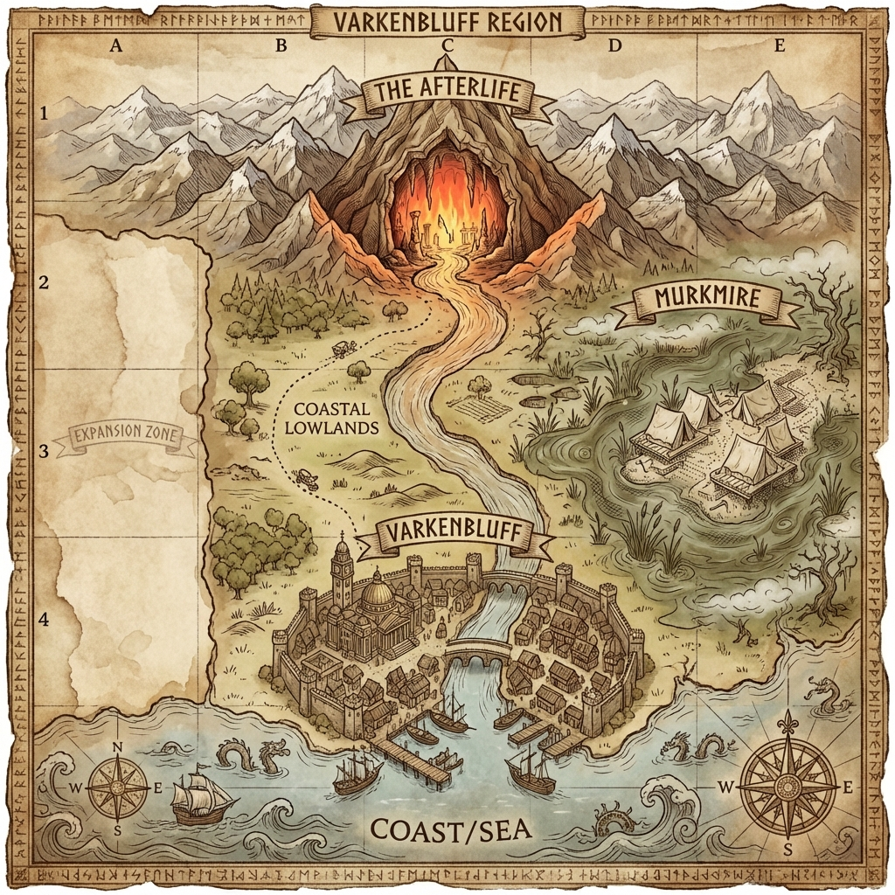

🌍 Varkenbluff Region
A coastal territory where ancient horrors sleep beneath academic ambition
Overview
The Varkenbluff Region encompasses the prosperous coastal city of Varkenbluff, the treacherous Murkmire swamplands, and the mountainous terrain to the north where the Afterlife Casino lurks in its cavern. A river flows from the northern mountains, past the casino's cave entrance, through the city, and out to the harbor.
Geography
Settlements
Major City — Coastal, at the river mouth. A prosperous city of academics and maritime trade.
Landmarks (Outside Settlements)
3 miles north of Varkenbluff, in a mountain cavern. Nine Hells–themed gambling den carved by the River Styx.
East of Varkenbluff, in the swamplands. Archaeological excavation where the eldritch egg was unearthed.
Region Layout
╔═══════════════════════════════════════════════════════════════════╗
║ MOUNTAINS ║
║ ║
║ ┌─────────────────────┐ ║
║ │ 🔥 THE AFTERLIFE 🔥│ ←── Cave entrance in ║
║ │ (Casino) │ mountain face ║
║ └──────────┬──────────┘ ║
║ │ ║
║ River ┌────────────────┐ ║
║ │ │ MURKMIRE │ ║
║ │ │ SWAMPS │ ║
║ │ │ ┌──────────┐ │ ║
║ │ │ │ DIG SITE │ │ ║
║ │ │ │ ⛺ ⛺ │ ║
║ │ │ └──────────┘ │ ║
║ ↓ │ ~~~≈≈≈~~~ │ ║
║ COASTAL LOWLANDS └────────────────┘ ║
║ │ ║
║ ╔════════════════════╧════════════════════╗ ║
║ ║ V A R K E N B L U F F ║ ║
║ ║ ┌──────────┐ │ River │ ┌────────────┐ ║ ║
║ ║ │ ACADEMIC │═╪═══════╪═│RESIDENTIAL │ ║ ║
║ ║ │ 🏛️ Museum │ │ │ │ ⌂ ⌂ ⌂ │ ║ ║
║ ║ │ 🏫 Univ │═╪═══════╪═│ ⌂ ⌂ ⌂ │ ║ ║
║ ║ └──────────┘ │ │ └────────────┘ ║ ║
║ ║ ┌────────────┴───────┴──────────────┐ ║ ║
║ ║ │ INDUSTRIAL WATERFRONT │ ║ ║
║ ║ │ ⚓ Docks ════════ 🏭 Warehouses │ ║ ║
║ ║ └───────────────────────────────────┘ ║ ║
║ ║ ════ HARBOR ════ ║ ║
║ ║ ⛵ ⛵ ⛵ ║ ║
║ ╚═════════════════════════════════════════╝ ║
║ ║
║ ~~~~ COAST / SEA ~~~~ ║
╚═══════════════════════════════════════════════════════════════════╝